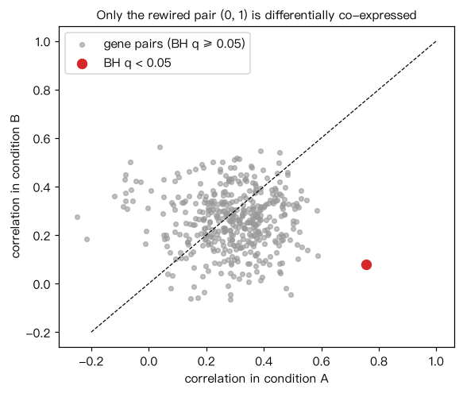

Example12 / 13
差异共表达——Fisher z 检验与置换检验
两种条件（如正常 vs 肿瘤）各 n 个样本，模拟 30 个基因：基因 0 与基因 1 在条件 A 中强相关（ρ = 0.8）， 在条件 B 中几乎不相关（ρ = 0.1），即一条“重连”的边；其余基因对在两条件下相关结构相同。 对每个基因对计算 z = (atanh r_A − atanh r_B) / sqrt(1/(n_A − 3) + 1/(n_B − 3))，并用 BH 法控制 FDR。 再对基因 0–1 这一对做置换检验（打乱条件标签）。 输出解读：被重连的边排名第一；其余 434 对中约 5% 达到名义 p < 0.05（多重比较下的预期假阳性）， BH 校正后只剩真正重连的那一对。
Output输出图

Output文字输出
排名第一的基因对：(0, 1)，r_A = 0.75，r_B = 0.08，z = 4.82，q = 0.00062 名义 p < 0.05 的基因对数 = 32 / 435；BH q < 0.05 的基因对数 = 1 基因 0–1 置换检验 p ≈ 0.0005
Code代码
# 两种条件（如正常 vs 肿瘤）各 n 个样本，模拟 30 个基因：基因 0 与基因 1 在条件 A 中强相关（ρ = 0.8），
# 在条件 B 中几乎不相关（ρ = 0.1），即一条“重连”的边；其余基因对在两条件下相关结构相同。
# 对每个基因对计算 z = (atanh r_A − atanh r_B) / sqrt(1/(n_A − 3) + 1/(n_B − 3))，并用 BH 法控制 FDR。
# 再对基因 0–1 这一对做置换检验（打乱条件标签）。
# 输出解读：被重连的边排名第一；其余 434 对中约 5% 达到名义 p < 0.05（多重比较下的预期假阳性），
# BH 校正后只剩真正重连的那一对。
import numpy as np
from scipy import stats
rng = np.random.default_rng(2)
p, nA, nB = 30, 60, 60 # 模拟数据，仅用于演示方法
base = 0.3 * np.ones((p, p)) + 0.7 * np.eye(p) # 背景：所有基因对相关 0.3
CA, CB = base.copy(), base.copy()
CA[0, 1] = CA[1, 0] = 0.8; CB[0, 1] = CB[1, 0] = 0.1
XA = rng.multivariate_normal(np.zeros(p), CA, nA); XB = rng.multivariate_normal(np.zeros(p), CB, nB)
def fisher_z(XA, XB):
rA, rB = np.corrcoef(XA.T), np.corrcoef(XB.T)
z = (np.arctanh(np.clip(rA, -0.999, 0.999)) - np.arctanh(np.clip(rB, -0.999, 0.999))) \
/ np.sqrt(1 / (len(XA) - 3) + 1 / (len(XB) - 3))
return z, rA, rB
z, rA, rB = fisher_z(XA, XB)
iu = np.triu_indices(p, 1)
pv = 2 * stats.norm.sf(np.abs(z[iu]))
order = np.argsort(pv); m = len(pv)
bh = np.minimum.accumulate((pv[order] * m / np.arange(1, m + 1))[::-1])[::-1]
q = np.empty(m); q[order] = np.minimum(bh, 1)
top = order[0]
print(f"排名第一的基因对：({iu[0][top]}, {iu[1][top]})，r_A = {rA[iu][top]:.2f}，r_B = {rB[iu][top]:.2f}，"
f"z = {z[iu][top]:.2f}，q = {q[top]:.2g}")
print(f"名义 p < 0.05 的基因对数 = {(pv < 0.05).sum()} / {m}；BH q < 0.05 的基因对数 = {(q < 0.05).sum()}")
X = np.vstack([XA, XB]); obs = z[0, 1]; cnt = 0; B = 2000
for _ in range(B):
perm = rng.permutation(len(X))
zp, _, _ = fisher_z(X[perm[:nA]][:, :2], X[perm[nA:]][:, :2])
cnt += abs(zp[0, 1]) >= abs(obs)
print(f"基因 0–1 置换检验 p ≈ {(cnt + 1) / (B + 1):.4f}")
import matplotlib.pyplot as plt
fig, ax = plt.subplots(figsize=(5.4, 4.6))
sig = q < 0.05
ax.scatter(rA[iu][~sig], rB[iu][~sig], s=14, color="0.6", alpha=0.6, label="gene pairs (BH q ≥ 0.05)")
ax.scatter(rA[iu][sig], rB[iu][sig], s=60, color="C3", label="BH q < 0.05")
ax.plot([-0.2, 1], [-0.2, 1], color="k", lw=0.8, ls="--")
ax.set_xlabel("correlation in condition A"); ax.set_ylabel("correlation in condition B")
ax.set_title("Only the rewired pair (0, 1) is differentially co-expressed", fontsize=10); ax.legend(loc="upper left")
plt.tight_layout(); plt.show()Run在浏览器中运行
首次加载 Python 环境约需 20–40 秒；可以修改参数后重新运行。